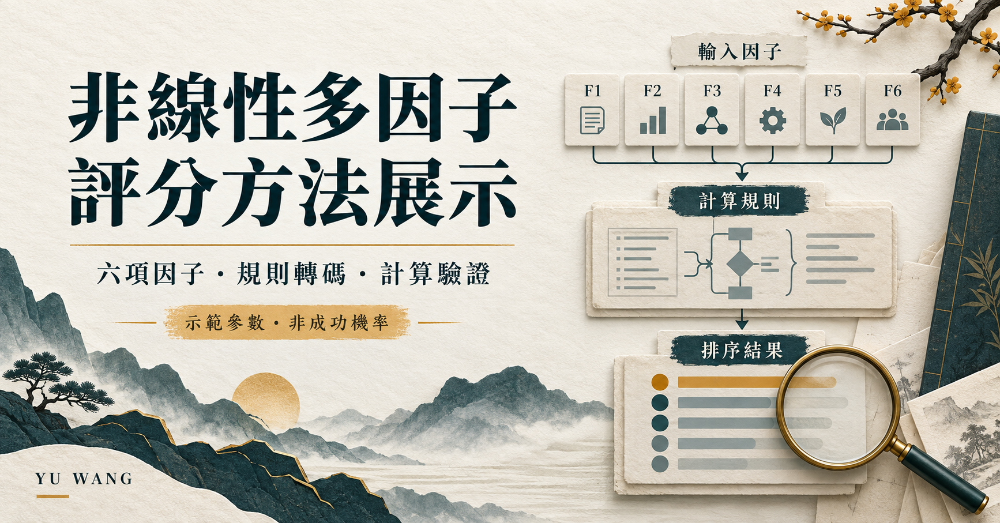

01
效益
公開規則中的預期價值；使用飽和曲線，降低邊際增益。
規則定義 · AI 協作開發 · 結果驗證
把決策規則轉成可追溯、可重複的計算。從六個輸入因子、資格門檻到候選排序，讓規則如何影響結果變得清楚可見。
此頁與 PDF 為繁體中文；互動計算器目前使用英文介面。展示在瀏覽器本機執行固定 JavaScript，評分時不呼叫 AI 或 API。

概念圖用於介紹計算流程；實際規則與數值以下方公式及英文互動展示為準。
01
公開規則中的預期價值；使用飽和曲線，降低邊際增益。
02
執行的可行性與準備程度，並與效益形成互動項。
03
數值越高，成本項帶來的偏好越低。
04
以非線性乘數衰減分數，並設資格上限。
05
作為分數乘數，同時設最低資格門檻。
06
以天為單位；每經過一個半衰期，時間乘數減半。
先驗證輸入，再判斷資格：先決條件必須成立，原始品質 ≥ 60、原始風險 ≤ 80。不合格時回傳 null 分數並排除於排序之外，不以零分混入排名。
前五個輸入皆為 0-100，除以 100 後依序為 u、m、c、r、q；t 為 0-365 天。U 為效益轉換，D 為時間乘數，P 為風險乘數，B 為正規化組合分數。
U = (1 - exp(-k*u)) / (1 - exp(-k)) D = exp(-ln(2)*t/H) P = exp(-beta*r^2) Z = w_u + w_m + w_c + gamma B = (w_u*U + w_m*m + w_c*(1-c) + gamma*U*m) / Z S = 100 * B * D * P * q
預設政策：k = 3、H = 14 天、beta = 2、gamma = 0.2；w_u = 0.5、w_m = 0.3、w_c = 0.2，因此 Z = 1.2。
公開程式接受 0.1 ≤ k ≤ 10、0.25 ≤ H ≤ 365；其餘參數為有限非負數，Z 必須有限且大於零。這是政策定義的優先指標，不是經校準的成功機率。
| 案例 | 效益 | 準備度 | 成本 | 風險 | 品質 | 天數 | 分數 |
|---|---|---|---|---|---|---|---|
| A | 95 | 85 | 30 | 65 | 90 | 21 | 12.07 |
| B | 90 | 90 | 30 | 15 | 97 | 7 | 58.88 |
| C | 65 | 70 | 15 | 20 | 92 | 1 | 64.51 |
| D | 98 | 95 | 20 | 10 | 45 | 1 | 排除 |
預設排序為 C ＞ B ＞ A；D 的品質低於 60，不參與排序。
| 半衰期 | B 分數 | C 分數 | 較高分案例 |
|---|---|---|---|
| 7 天 | 41.63 | 61.39 | C |
| 14 天 | 58.88 | 64.51 | C |
| 30 天 | 70.83 | 66.23 | B |
互動係數增加，不一定提高分數。 gamma 也會增加分母 Z；案例 C 在 gamma = 0 時為 67.19，在 gamma = 0.2 時為 64.51。敏感度展示規則的行為，不代表真實決策成效提升。
直接執行目前 app.mjs 的檢查函式通過，涵蓋固定案例、邊界、輸入驗證與數學行為。這次執行不是新增的 UI 操作紀錄。
重跑既有比較腳本，與獨立公式重算結果核對通過。這是另一組檢查，不與 59 項相加宣稱獨立總數。
原英文 PDF 保留早期 48/48 頁內檢查通過、另有 8 項 UI 探測的歷史紀錄。它與目前公開程式屬於不同檢查快照，繁中 PDF 會清楚區分。上述檢查不等於完整資安稽核、預測準確率驗證或正式生產部署。
我定義需求、評分規則、接受條件與開發方向，透過檢討修正實作，確認結果符合原先意圖。AI 協助產生與修訂程式、測試及文件；實際評分使用固定程式，不由 AI 臨場判斷。
本作品使用另行建構的公開規則、參數及案例，未包含私有原始模型細節、規則或資料。不宣稱模型訓練、已校準的成功機率、已證實的預測準確率或生產部署。
全遠端、兼職或專案合作。主要時段為平日台灣時間 19:00-22:00（UTC+8）；白天會議需事先安排。
暫不接受全英文會議。